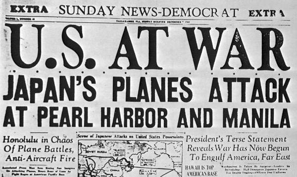
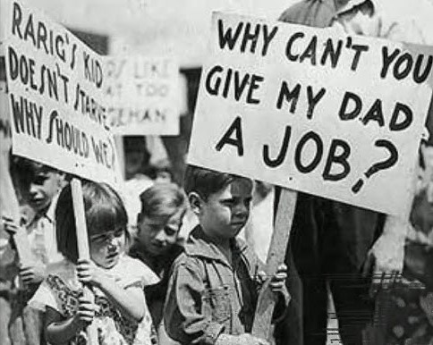

Pre U.S. Entry

What caused WWII to break out?
WWII was caused by the failure to compromise on issues from WWI. The Treaty of Versailles failed to establish lasting peace between nations. Versailles imposed harsh punishments on Germany, including large war reparations and territorial losses, as it placed full blame on Germany. These harsh measures significantly contributed to the rise of Fascism and left Europe vulnerable to future conflicts. The treaty failed to address the root causes of WWI, instead focusing solely on Germany. As a result, Fascism and militarism began to rise.
How did Fascism and the Axis Powers rise?
Worldwide economic depression forced some nations to take desperate measures. Economic hardships contributed to the rise of dictators in Germany, Italy, and Japan during the 1920s and 1930s. Nationalist resentments after World War I further accelerated this trend. These three countries eventually formed the Axis Powers in 1940 through a treaty alliance.
Italy’s Fascist regime seized power in 1922. Benito Mussolini’s Fascist Party paved the way for Fascism in Europe. Fascism promoted the idea that a nation should glorify itself through aggressive force. Fascists marched through Rome to impose Mussolini’s will.
Germany’s Nazi Party was similar to Italy’s Fascist Party. The Nazi Party arose due to poor economic conditions and resentment toward the Treaty of Versailles. Hitler gained control of the German legislature in 1933. He led his personal paramilitary group, the “Brownshirts.” The Nazi Party mainly attracted disgruntled, unemployed German workers. Hitler used intimidation and anti-Semitic propaganda to blame the Jews for Germany’s economic struggles. Mussolini’s Fascist Party served as a model for the German Nazi Party.
Economic hardship also led Japan toward radical nationalism. Japanese militarists persuaded the emperor to invade China and Southeast Asia to secure raw materials such as oil, tin, and iron. Political instability further strengthened the military dictatorship in Japan. Japan’s invasion of Manchuria posed a major threat to world peace.
U.S. Before the War
Like much of the world, the United States experienced its own depression. The Stock Market Crash of 1929 triggered the Great Depression. The crash was caused by over-speculation and an unstable economic system. The stock market would not return to its 1929 peak until 1954. Thousands of banks failed across the country. The depression was also fueled by overproduction and a decline in agriculture. During this time, 1 in 4 workers were unemployed. President Franklin Delano Roosevelt attempted to address this crisis with the New Deal, which expanded the federal government’s role in the economy. FDR focused on his “Three R’s”: relief for the people, recovery for businesses and the economy, and reform of American economic institutions. These three pillars became the phases of his New Deal programs. The New Deal ultimately provided jobs, strengthened capitalism, and gave Americans renewed hope, while also increasing the government’s power.

When and why did the U.S. join the war?
France and Britain were weakening in the fight against the Axis Powers. The U.S. remained neutral but wanted to help the Allies. However, the Neutrality Acts restricted Roosevelt’s actions. In 1939, FDR persuaded Congress to implement “Cash and Carry,” allowing Britain to purchase arms in exchange for cash. To further bypass neutrality restrictions, Roosevelt encouraged Congress to prepare a military draft. The first peacetime draft, established in 1940 through the Selective Training and Service Act, registered all American men ages 21 to 35 and provided training for 1.2 million troops.
After France surrendered in 1940, only Great Britain remained defending democracy in Europe. The British were under constant attack by German forces, including submarine threats in the Atlantic. Roosevelt negotiated the Destroyers for Bases deal, exchanging 50 U.S. destroyers for the right to build military bases in the Caribbean, which helped bypass isolationist sentiment.
From a moral standpoint, the U.S. moved closer to war. On January 6th, 1941, Roosevelt addressed Congress with his Four Freedoms speech, pledging that the U.S. must defend other nations to safeguard freedom of speech, freedom of religion, freedom from want, and freedom from fear. Public opinion shifted further after the Lend-Lease Act was signed in March 1941, providing war supplies to nations vital to U.S. defense, particularly Britain. Roosevelt likened it to lending a neighbor a garden hose to put out a fire and emphasized that the cost was irrelevant.
Before entering the war, Roosevelt met with British Prime Minister Winston Churchill in a secret meeting to draft the Atlantic Charter. This document outlined principles for postwar peace and declared that the U.S. and Britain would fight together as “Christian soldiers.” In the summer of 1941, the U.S. engaged German ships carrying Lend-Lease supplies. Following Roosevelt’s orders, the Navy attacked German ships on sight after the American destroyer, the Greer, was attacked, initiating an undeclared shooting campaign against Germany.
Japan also pushed the U.S. toward war. After joining the Axis Powers in 1940, economic tensions escalated. Japan’s occupation of French Indochina led Roosevelt to impose an oil and materials embargo. Negotiations failed between Japan’s Hideki Tojo and the U.S., prompting Japan to seek resources elsewhere in the Dutch East Indies. The U.S. aimed to strengthen its Pacific fleet in anticipation of armed conflict.
The Pacific Fleet was anchored at Pearl Harbor, Hawaii. On December 7th, 1941, Japanese planes attacked, destroying or damaging 20 warships and around 150 airplanes, killing 2,400 Americans and wounding 1,200. Most Americans were still asleep at the time, around 7:55 AM.
Roosevelt described the attack as “a date which will live in infamy” and asked Congress to declare war. On December 8th, 1941, Congress declared war on Japan. Germany and Italy, honoring the Axis alliance, subsequently declared war on the United States, officially bringing the U.S. into WWII.